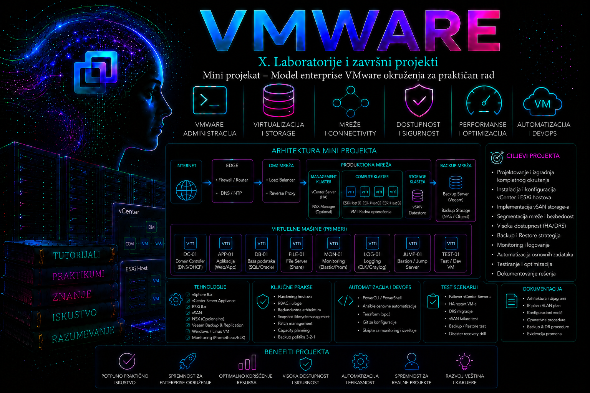

VMware

Projektni zadatak i administratorski kontekst
Ovaj mini projekat nadovezuje se na laboratoriju iz Dodatka 1, ali menja perspektivu. Cilj više nije samo da ESXi hostovi, vCenter Server, mreže i zajednički datastore budu instalirani i funkcionalni, već da od postojećeg tehničkog okruženja nastane umanjeni, proverljivi model enterprise vSphere platforme. Takav model mora imati obrazložene arhitektonske odluke, jasno vlasništvo, kontrolisan pristup, standarde konfiguracije, trag promena, nadzor, oporavak i dokaze na osnovu kojih druga stručna osoba može da proceni njegovo stanje.
Organizacija „Tashizza Systems” raspolaže laboratorijskim vSphere okruženjem sa dva ESXi hosta, jednim vCenter Server Appliance sistemom, zajedničkim NFS datastore-om, odvojenim VMkernel servisima i testnim virtuelnim mašinama. Uprava zahteva da se pre korišćenja laboratorije za proveru produkcionih promena uvedu minimalne enterprise kontrole: segregacija dužnosti, najmanje privilegije, pouzdan identitet i vreme, mrežno razdvajanje, konfiguracioni standard, udaljeno beleženje događaja, nadzirani kapacitet, backup upravljačkog sloja i dokumentovan proces promene.
Ishodi, obim i kriterijumi prihvatanja
Ishodi projekta
Po završetku projekta administrator treba da ume da:
- prevede poslovne i regulatorne zahteve u proverljive tehničke kontrole;
- izradi logičku arhitekturu, inventar, RACI odgovornosti i registar odluka;
- primeni RBAC po principu najmanjih privilegija bez nekontrolisanog nasleđivanja dozvola;
- razdvoji management, vMotion, storage i VM saobraćaj i dokaže tačnost servisnih veza;
- uspostavi baznu konfiguraciju hostova, bezbednosni minimum, monitoring i audit trag;
- pripremi file-based backup vCenter Server Appliance sistema i proveri uslove za restore;
- izvede kontrolisanu promenu sa pre-check, planom rollback-a, post-check proverama i dokazima;
- pronađe odstupanje od standarda, utvrdi uzrok i sprovede trajnu korektivnu meru.
Obuhvaćeno i izvan obima
| Obuhvaćeno | Izvan obima mini projekta | Razlog |
|---|---|---|
| vCenter, dva ESXi hosta i klaster | višelokacijski SDDC | potreban je veći fizički i mrežni opseg |
| vSphere Standard Switch ili licencirani vSphere Distributed Switch | NSX segmentacija | zaseban proizvod, dizajn i licenciranje |
| NFS datastore i kontrola dostupnosti | produkcioni vSAN dizajn | zahteva kompatibilan hardver, sizing i posebnu validaciju |
| SSO, lokalni ili spoljašnji identity source i RBAC | kompletan IAM/PAM projekat | organizacijski proces prevazilazi vSphere sloj |
| VCSA file-based backup i restore plan | backup podataka svih VM-ova | potreban je podržan backup proizvod i zasebna politika |
| bazni hardening i dokaz usklađenosti | formalna sertifikacija usklađenosti | zahteva nezavisni audit i formalni opseg |
Kriterijumi prihvatanja
- svi upravljani sistemi imaju stabilan FQDN, DNS forward i reverse zapis i usklađeno vreme;
- oba hosta su povezana sa vCenter-om, pripadaju predviđenom klasteru i nemaju neočekivane aktivne alarme;
- VMkernel adapteri imaju dokumentovanu namenu, VLAN, MTU i omogućene samo potrebne servise;
- NFS datastore je dostupan sa oba hosta i testna VM može bezbedno da koristi zajednički storage;
- najmanje tri uloge — platform administrator, VM operator i auditor — prolaze pozitivne i negativne testove privilegija;
- SSH i ESXi Shell nisu trajno uključeni bez odobrenog izuzetka, a firewall nije neopravdano otvoren;
- remote syslog, događaji, alarmi i minimalne metrike daju vremenski korelisane dokaze;
- postoji uspešan VCSA backup posao, zabeležena lokacija i dokumentovan restore redosled;
- jedna promena je prošla kroz zahtev, odobrenje, pre-check, implementaciju, post-check i zatvaranje;
- konačno stanje je izvezeno i razlikuje se od početnog samo u odobrenim tačkama.
Pre projektovanja: verzije, licence i izvor istine
Referentna laboratorija koristi vSphere 8.0 Update 3 verzijsku liniju, ali se konkretan build ne sme pretpostaviti. Pre rada treba zapisati build vCenter-a i svakog ESXi hosta, proveriti release notes i matrice kompatibilnosti, a zatim potvrditi da vCenter može upravljati izabranim buildovima hostova. Patch ili update menja se samo kroz poseban lifecycle postupak. U okruženjima zasnovanim na vSphere 8 naziv komandnog paketa u novijim Broadcom referencama je VCF PowerCLI; veliki deo poznatih vSphere cmdlet-a zadržava isto ponašanje, ali skriptu treba proveriti prema trenutno instaliranoj verziji modula.
vSphere Distributed Switch, Host Profiles, određene DRS, HA, enkripcijske i lifecycle mogućnosti zavise od izdanja i prava korišćenja. Projekat zato definiše dve mrežne putanje: osnovna laboratorijska varijanta koristi vSphere Standard Switch, dok se vSphere Distributed Switch primenjuje samo kada je licenciran i kada postoji dokumentovan način oporavka management mreže. VDS nije sam po sebi „bezbedniji”; prednost mu je centralna konzistentnost, ali greška centralne konfiguracije ima širi domet.
Minimalni izvor istine
| Artefakt | Vlasnik | Sadržaj | Dokaz ažurnosti |
|---|---|---|---|
| inventar/CMDB zapis | platform tim | objekat, FQDN, IP, build, lokacija, vlasnik, kritičnost | datum poslednje potvrde i automatski izvoz |
| IP/VLAN plan | mrežni tim | segment, gateway, MTU, servis, ACL i owner | upoređivanje sa VMkernel i port-group stanjem |
| matrica pristupa | security/IAM | grupa, vSphere uloga, objekat, propagacija i odobrenje | periodična recertifikacija |
| baseline konfiguracije | platform tim | NTP, DNS, syslog, servisi, firewall, mreže, storage i alarmi | datirani read-only izvoz i diff |
| registar promena | change owner | razlog, rizik, provere, izvršilac, rezultat i rollback | zatvoren zapis sa prilozima |
| runbook oporavka | service owner | zavisnosti, redosled, kontakti, RPO/RTO i kriterijumi uspeha | datum poslednjeg testa |
Ciljna arhitektura i zone poverenja
Administratorska stanica
|
| HTTPS / PowerCLI, kontrolisan pristup
v
Management zona: DNS + NTP + Syslog + VCSA
|
+---- ESXi-01 ---- VMkernel: management / vMotion / NFS
|
+---- ESXi-02 ---- VMkernel: management / vMotion / NFS
|
+---- zajednički NFS datastore
VM mreže: odvojene port grupe; bez direktnog pristupa ESXi management interfejsuLogičko razdvajanje mora odgovarati stvarnom putu paketa. Različiti nazivi port grupa bez različitih VLAN-ova, fizičkih uplinkova ili kontrolisanih ACL pravila ne predstavljaju stvarnu segmentaciju. U laboratoriji se segmentacija može simulirati host-only mrežama i VLAN oznakama; u produkciji se njena ispravnost dokazuje konfiguracijom fizičkih svičeva, rutiranjem, firewall pravilima i testovima dozvoljenog i zabranjenog toka.
| Zona/tok | Namena | Ključna kontrola | Posledica greške |
|---|---|---|---|
| management | vCenter, ESXi administracija, agenti | ograničen izvorni pristup, TLS, DNS i NTP | gubitak upravljanja ili neovlašćena kontrola platforme |
| vMotion | prenos aktivnog memorijskog stanja VM-a | izolovan segment; enkripcija vMotion-a prema politici i mogućnostima | prekid migracije ili izlaganje osetljivog toka |
| IP storage | NFS saobraćaj | izolacija, dosledan MTU, kontrola eksportovanih klijenata | APD, zastoj I/O-a i uticaj na više VM-ova |
| VM mreže | aplikacioni saobraćaj | port grupe/VLAN-ovi prema aplikacionim zonama | lateralno kretanje i prevelik blast radius |
| backup/syslog | dokazi i oporavak | odvojena prava, retencija i nadzor neuspeha | gubitak dokaza ili nemoguć restore |
Identitet, RBAC i segregacija dužnosti
Administriranje zajedničkim nalogom administrator@vsphere.local uklanja individualnu odgovornost i povećava posledice kompromitacije. Taj nalog ostaje za kontrolisan emergency pristup, sa zaštićenom tajnom i nadziranim korišćenjem. Redovan rad obavljaju imenovani nalozi kroz grupe spoljašnjeg identity source-a ili, u izolovanoj laboratoriji, jasno označene lokalne SSO naloge. MFA i privilegovani pristup rešavaju se u skladu sa podržanim identity/PAM dizajnom, a ne improvizovanim deljenjem lozinki.
| Grupa/uloga | Dozvoljeni poslovi | Zabranjeni poslovi | Opseg |
|---|---|---|---|
| TASH-VSP-PLATFORM-ADMINS | upravljanje hostovima, klasterom, mrežom i storage-om | nekontrolisana izmena identiteta i brisanje audit dokaza | infrastrukturni objekti |
| TASH-VSP-VM-OPERATORS | power operacije, konzola i odobrena promena VM resursa | host, VDS, datastore i globalne dozvole | odabrani VM folder/resource pool |
| TASH-VSP-AUDITORS | pregled konfiguracije, događaja, zadataka i alarma | svaka state-changing operacija | root inventara, read-only |
| TASH-VSP-BACKUP-SVC | samo operacije koje zahteva podržani backup proizvod | interaktivni administratorski rad | precizno dokumentovan |
Dozvole u vSphere-u kombinuju principal, ulogu, objekat i propagaciju. Najčešća greška nije nedostatak privilegije već neželjeno nasleđivanje sa previsokog nivoa. Pre svake izmene treba snimiti postojeće dozvole i proveriti da li korisnik dobija dodatna prava kroz drugu grupu. Efektivna prava testiraju se stvarnim nalogom, i pozitivno i negativno: operator mora moći da pokrene dozvoljenu VM, ali ne sme moći da promeni host mrežu.
# READ-ONLY: pokrenuti sa administratorske stanice posle Connect-VIServer.
Get-VIPermission |
Select-Object Principal, Role, Entity, Propagate, IsGroup |
Sort-Object Principal, Entity |
Export-Csv -Path ./evidence/permissions-before.csv -NoTypeInformation
Get-VIRole |
Select-Object Name, @{N='PrivilegeCount';E={$_.PrivilegeList.Count}} |
Sort-Object Name
Izvoz je read-only i služi kao dokaz pre promene. Ne sadrži lozinke, ali može otkriti imena naloga i strukturu inventara, pa direktorijum evidence mora imati kontrolisan pristup i definisanu retenciju.
Bezbednosni baseline i upravljanje izuzecima
Baseline nije spisak nasumično uključenih „bezbednih” opcija. Svaka kontrola ima cilj, vlasnika, očekivanu vrednost, način provere, moguć operativni uticaj i odobren proces izuzetka. Referentna osnova je vSphere Security Configuration and Hardening Guide odnosno aktuelna Broadcom vSphere Security Controls Reference za tačnu verziju. Kontrole se ne kopiraju između glavnih verzija bez provere; na primer, vlasništvo nad ESXi firewall pravilima i mogućnost njihove izmene razlikuju se u novijim vSphere 8 ažuriranjima.
Minimalne kontrole projekta
- Secure Boot i TPM/attestation koriste se kada ih fizička platforma i podržani dizajn omogućavaju; nested demonstracija nije ekvivalent fizičkom dokazu;
- Lockdown Mode se razmatra za produkciju uz prethodno testiran vCenter pristup, exception users i recovery put; ne uključuje se slepo u maloj laboratoriji;
- SSH i ESXi Shell imaju politiku „stopped/manual”, vremenski ograničeno uključivanje i evidentiran razlog;
- remote syslog ima najmanje dva aspekta: host šalje događaje, a prijemni sistem ih zaista prima, vremenski označava i čuva;
- NTP/chrony izvori su pouzdani i usaglašeni za vCenter, ESXi, DNS, storage i log kolektor;
- TLS sertifikati, rok važenja, SAN/FQDN i lanac poverenja prate se pre isteka;
- nepotrebni servisi i firewall ruleset-i ostaju isključeni, a svaki izuzetak ima rok i vlasnika;
- VM opcije kao što su copy/paste, uređaji i rezervacije podešavaju se prema riziku i poslovnoj potrebi, ne univerzalnim pretpostavkama.
# READ-ONLY: pregled servisa i NTP izvora na svim hostovima.
Get-VMHost | ForEach-Object {
$hostObject = $_
Get-VMHostService -VMHost $hostObject |
Where-Object {$_.Key -in @('TSM','TSM-SSH','ntpd')} |
Select-Object @{N='VMHost';E={$hostObject.Name}}, Key, Label, Running, Policy
}
Get-VMHost | Select-Object Name,
@{N='NtpServers';E={(Get-VMHostNtpServer -VMHost $_) -join ';'}}
Komande samo čitaju stanje. Nalaz da je TSM-SSH aktivan nije dovoljan za trenutno gašenje: najpre se proverava aktivna troubleshooting sesija i change zapis. Trajna korektivna mera može biti vraćanje servisa na očekivanu politiku, ali tek nakon potvrde da se time ne prekida odobren rad.
Upravljivost: standardi, lifecycle, kapacitet i observability
Konfiguracioni standard
Standard obuhvata naziv hosta, DNS, NTP, syslog, cluster članstvo, VMkernel servise, vSwitch/VDS strukturu, datastore veze, servisnu politiku, alarmne pragove i tagove. Host Profiles ili desired image mogu pomoći u kontroli odstupanja samo kada su licencirani i prikladni za dizajn. Bez njih se koristi verzionisan read-only izvoz i kontrolisano poređenje; ručno „vizuelno” poređenje nije dovoljno za ponovljiv audit.
# READ-ONLY inventar za početno stanje.
$snapshot = [ordered]@{
CollectedAtUtc = (Get-Date).ToUniversalTime().ToString('o')
VCenter = $global:DefaultVIServer.Name
Hosts = Get-VMHost | Select-Object Name, ConnectionState, PowerState, Version, Build,
NumCpu, MemoryTotalGB
Datastores = Get-Datastore | Select-Object Name, Type, State, CapacityGB, FreeSpaceGB
Networks = Get-VirtualPortGroup | Select-Object Name, VirtualSwitch, VLanId
}
$snapshot | ConvertTo-Json -Depth 5 |
Set-Content -Path ./evidence/baseline.json -Encoding utf8Ovaj blok ne menja vSphere objekte, ali zapisuje lokalni JSON fajl. Pre poređenja treba normalizovati redosled kolekcija i čuvati istu verziju skripte; u suprotnom diff može prikazati lažna odstupanja. Build podaci se upoređuju sa odobrenim desired state-om, ne sa proizvoljno „najnovijom” verzijom.
Kapacitet i alarmi
Upravljivo okruženje mora razlikovati trenutnu iskorišćenost, trend i rezervu potrebnu za kvar ili održavanje. U dvonodnom klasteru kapacitet koji izgleda slobodno tokom normalnog rada može biti nedovoljan kada jedan host ode u maintenance mode. CPU overcommit, memory contention, datastore latency, slobodan prostor, snapshot rast i vreme čekanja VM-a procenjuju se zajedno. Alarm bez vlasnika, praga, runbook-a i eskalacije je samo buka.
| Signal | Šta potvrđuje | Tipična korelacija | Akcija |
|---|---|---|---|
| host connection state | dostupnost management ravni | DNS, mreža, hostd/vpxa, vCenter događaji | najpre utvrditi obim; ne restartovati agente naslepo |
| datastore latency i free space | I/O zdravlje i prostor | NFS mreža, storage logovi, snapshot rast | zaštititi podatke i ukloniti uzrok, ne samo alarm |
| CPU ready | čekanje vCPU-a na fizički CPU | oversizing VM-a, host contention, DRS | right-sizing i raspodela opterećenja |
| ballooning/swapping | memory pressure | limits, reservations, host memorija | utvrditi izvor pritiska pre dodavanja memorije |
| task/event failure | neuspela operacija i akter | audit trag, dozvole, zavisni servis | sačuvati događaj i povezati sa change zapisom |
Logovi i vremenska korelacija
| Komponenta | Pristup/lokacija | Šta se traži |
|---|---|---|
| ESXi host management | /var/log/hostd.log | lokalne API operacije, task greške i objekti |
| vCenter agent na hostu | /var/log/vpxa.log | komunikacija hosta sa vCenter-om |
| kernel/storage/mreža | /var/log/vmkernel.log | NFS, APD/PDL, NIC, driver i kernel događaji |
| autentikacija | /var/log/auth.log | prijave, neuspešna autentikacija i shell pristup |
| VCSA servisi | VAMI i /var/log/vmware/ podstabla | servis specifične greške i zavisnosti |
| vSphere Client | Tasks, Events i Alarms | akter, vreme, objekat i rezultat operacije |
Za incident se bira uzak vremenski prozor oko prvog simptoma, zatim se konvertuju vremenske zone i korelišu vCenter događaj, ESXi log, storage/server log i change zapis. Jedna linija iz loga nije dokaz osnovnog uzroka bez vremenske i sistemske korelacije.
Backup, recovery i granice visoke dostupnosti
vSphere HA štiti izvršavanje VM-ova od određenih kvarova hosta, ali nije backup. Snapshot nije backup, naročito ne dugotrajan: zavisi od osnovnih diskova, raste, utiče na I/O i može otežati konsolidaciju. VCSA file-based backup štiti konfiguraciju i podatke vCenter Server Appliance sistema prema podržanom protokolu i odredištu; zaštićeni podaci poslovnih VM-ova zahtevaju zasebnu, application-aware politiku i podržan proizvod.
Backup se konfiguriše kroz VAMI interfejs na portu 5480 koristeći poseban nalog i odredište sa minimalnim pravima. Tajna se ne unosi u skripte ni lekcijske primere. Uspeh posla nije dovoljan dokaz oporavljivosti: proveravaju se kompletiran status, veličina i retencija, pristup odredištu, verzijska kompatibilnost za restore, DNS/NTP zavisnosti i dokumentovan postupak obnove u izolovanom okruženju.
| Objekat | Mehanizam | RPO/RTO pitanje | Obavezna provera |
|---|---|---|---|
| VCSA | ugrađeni file-based backup | koliko konfiguracije/događaja sme da se izgubi | restore kompatibilnost i test postupka |
| ESXi konfiguracija | desired state, host profile ili dokumentovan rebuild | vreme ponovnog priključenja hosta | mreža, storage, licence i certifikati |
| VM podaci | podržani backup proizvod | poslovni RPO/RTO aplikacije | restore VM-a i aplikaciona konzistentnost |
| VDS konfiguracija | export/backup konfiguracije | vreme vraćanja mrežne kontrole | verzija, port grupe i bezbedan management put |
| dokazi i runbook | verzionisano, odvojeno spremište | raspoloživost tokom incidenta | offline pristup ovlašćenog tima |
Praktikum: izgradnja i dokazivanje enterprise modela
Topologija, preduslovi i bezbednosna ograda
Vežbe se izvode isključivo u laboratoriji Dodatka 1. Potrebni su dva dostupna ESXi hosta, vCenter, zajednički NFS datastore, DNS/NTP/syslog servis, administratorska stanica sa aktuelnim VCF PowerCLI modulom i najmanje jedna nekritična testna VM. Potrebni su SSO administrator za inicijalnu delegaciju, namenski testni operator i auditor. Pre rada napraviti VCSA file-based backup ili potvrditi poslednji uspešan posao, izvesti postojeće dozvole i mrežnu konfiguraciju i otvoriti laboratorijski change zapis.
Vežba 1 — snimanje početnog stanja
Cilj: napraviti vremenski označen paket dokaza pre bilo kakve izmene.
# Pokrenuti na administratorskoj stanici. Komande nad vSphere-om su READ-ONLY.
$vc = 'vcsa01.lab.example'
Connect-VIServer -Server $vc
$stamp = Get-Date -Format 'yyyyMMdd-HHmmss'
$evidence = Join-Path $PWD "evidence-$stamp"
New-Item -ItemType Directory -Path $evidence | Out-Null
Get-VMHost | Select-Object Name,ConnectionState,PowerState,Version,Build |
Export-Csv "$evidence/hosts.csv" -NoTypeInformation
Get-Cluster | Select-Object Name,HAEnabled,DrsEnabled,DrsAutomationLevel |
Export-Csv "$evidence/clusters.csv" -NoTypeInformation
Get-VMHostNetworkAdapter -VMKernel |
Select-Object VMHost,Name,IP,SubnetMask,PortGroupName,VMotionEnabled |
Export-Csv "$evidence/vmkernel.csv" -NoTypeInformation
Get-Datastore | Select-Object Name,Type,State,CapacityGB,FreeSpaceGB |
Export-Csv "$evidence/datastores.csv" -NoTypeInformation
Get-VIPermission | Select-Object Principal,Role,Entity,Propagate,IsGroup |
Export-Csv "$evidence/permissions.csv" -NoTypeInformation
Get-AlarmDefinition | Select-Object Name,Enabled |
Export-Csv "$evidence/alarms.csv" -NoTypeInformation
Očekivani rezultat i validacija: direktorijum sadrži šest čitljivih CSV fajlova; broj hostova je dva, datastore nije u stanju Unavailable, a zapisi dozvola odgovaraju početnom stanju. Ako konekcija ne uspe, proveriti FQDN, TCP 443, sertifikat i dozvolu naloga; ne koristiti trajno InvalidCertificateAction Ignore kao zamenu za ispravan trust.
Vežba 2 — primena i test RBAC modela
Cilj: operatoru delegirati samo rad nad folderom LAB-Workloads, dok auditor dobija read-only pregled. U GUI-ju kreirati ili potvrditi SSO grupe i prilagođenu ulogu na stranici Administration → Access Control. Precizne privilegije izabrati prema radnim zadacima; ne klonirati Administrator pa nasumično uklanjati prava.
# STATE-CHANGING primer: imena prilagoditi laboratoriji.
$folder = Get-Folder -Name 'LAB-Workloads'
$operatorRole = Get-VIRole -Name 'TASH-VM-Operator'
$auditorRole = Get-VIRole -Name 'Read-only'
New-VIPermission -Entity $folder `
-Principal 'vsphere.local\TASH-VSP-VM-OPERATORS' `
-Role $operatorRole -Propagate:$true
New-VIPermission -Entity (Get-Datacenter -Name 'DC-TASH-LAB') `
-Principal 'vsphere.local\TASH-VSP-AUDITORS' `
-Role $auditorRole -Propagate:$trueTest: u zasebnoj sesiji operator pokreće ugašenu testnu VM i otvara konzolu, ali pokušaj izmene VMkernel adaptera mora biti odbijen. Auditor vidi stanje i događaje, ali ne može da uključi VM. U Events beleže se principal, objekat i rezultat. Ako je zabranjena radnja ipak moguća, pregledati članstvo u svim grupama i dozvole nasleđene sa root/datacenter nivoa.
Rollback: ukloniti isključivo dve dozvole kreirane u vežbi komandom Remove-VIPermission nad tačno identifikovanim objektima; ne brisati uloge ili grupe dok se ne potvrdi da ih drugi objekti ne koriste. Kriterijum završetka je dokumentovan pozitivan i negativan test za obe grupe.
Vežba 3 — validacija mrežne i storage segmentacije
Cilj: dokazati da je svaki VMkernel servis vezan za očekivanu mrežu i da zajednički NFS datastore radi sa oba hosta.
# READ-ONLY; pokrenuti u privremeno odobrenoj ESXi Shell/SSH sesiji.
esxcli network ip interface list
esxcli network ip interface tag get -i vmk0
esxcli network ip interface tag get -i vmk1
esxcli network ip interface tag get -i vmk2
esxcli storage nfs list
# READ-ONLY test VMkernel putanje; prilagoditi vmk interfejs i cilj.
vmkping -I vmk1 192.0.2.22
vmkping -I vmk2 192.0.2.40
Očekuje se da management, vMotion i NFS oznake odgovaraju projektnom planu, da ping prolazi samo kroz predviđeni VMkernel put i da isti NFS volume ima stanje mounted/accessible na oba hosta. Za jumbo frame test koristi se opcija i veličina prilagođena verziji i ciljnom MTU-u, tek nakon end-to-end provere. Posle vežbe SSH/ESXi Shell vratiti na prethodnu politiku i sačuvati relevantan isečak vmkernel.log samo ako je bilo greške.
Vežba 4 — hardening provera i kontrolisano odstupanje
Cilj: pronaći jedno bezbedno simulirano odstupanje, objasniti rizik i vratiti standard. Kao simulaciju administrator na jednom hostu kroz vSphere Client privremeno pokreće SSH servis uz laboratorijski change zapis i rok od deset minuta. Ne menja firewall na AllowedAll i ne uključuje Lockdown Mode bez konzolnog recovery plana.
- pre promene izvesti stanje
TSM-SSH, vreme i aktivnog korisnika; - pokrenuti servis samo na
esxi01i potvrditi očekivani warning/alarm; - read-only skriptom identifikovati da samo jedan host odstupa;
- povezati događaj sa change zapisom i potvrditi da pristup nije korišćen sa neodobrene stanice;
- zaustaviti SSH, vratiti početnu startup politiku i potvrditi prestanak odstupanja;
- zabeležiti razliku između privremene korekcije i trajne kontrole: automatizovano otkrivanje servisa sa vlasnikom alarma.
# READ-ONLY detekcija odstupanja.
Get-VMHost | ForEach-Object {
$hostObject = $_
Get-VMHostService -VMHost $hostObject |
Where-Object {$_.Key -eq 'TSM-SSH'} |
Select-Object @{N='VMHost';E={$hostObject.Name}}, Running, Policy
}Rollback: ako se servis ne može zaustaviti zbog aktivne sesije, najpre identifikovati vlasnika sesije; prisilno prekidanje nije prva mera. Vežba je završena kada oba hosta ponovo odgovaraju baseline-u, događaji su sačuvani, a privremeni pristup zatvoren.
Vežba 5 — kontrolisana promena alarma
Cilj i kontekst: prag za slobodan prostor datastore-a treba prilagoditi laboratorijskom kapacitetu bez prikrivanja stvarnog rizika. Pre promene zabeležiti sadašnji prag, trenutno zauzeće, trend i razlog. Promena se izvodi u GUI-ju nad kopijom alarma ili u ograničenom opsegu, ne globalnim isključivanjem alarma.
- Pre-check: nema aktivnog storage incidenta, datastore je dostupan sa oba hosta, postoji početni izvoz alarma.
- Implementacija: postaviti upozorenje i kritični prag prema dokumentovanoj rezervi, vlasnika i akcioni runbook.
- Test: bezbedno smanjiti slobodan prostor kreiranjem laboratorijskog test objekta samo ako postoji dovoljna rezerva; sigurnija alternativa je test na malom namenskom datastore-u.
- Post-check: alarm se aktivira na očekivanom pragu, događaj ima tačno vreme, a nakon uklanjanja test objekta vraća se u zeleno stanje.
- Rollback: vratiti prethodne pragove iz evidence paketa ako alarm proizvodi lažne pozitivne rezultate ili se ne ponaša prema acceptance kriterijumu.
Vežba 6 — VCSA backup i recovery tabletop
Cilj: potvrditi da upravljački sloj ima upotrebljiv plan oporavka bez izvođenja destruktivnog restore-a u aktivnoj laboratoriji. Kroz VAMI proveriti poslednji file-based backup ili pokrenuti novi posao ka namenskom odredištu. Ne snimati lozinku u screenshot niti evidence fajl.
- potvrditi protokol, FQDN odredišta, slobodan prostor, servisni nalog i minimalna prava;
- pokrenuti backup i zabeležiti početak, završetak, veličinu, sadržaj i status;
- proveriti da je odredište dostupno recovery timu nezavisno od vCenter-a;
- tabletop scenarijem proći redosled: izbor kompatibilnog VCSA instalera, Stage 1 postavljanje novog appliance-a, Stage 2 vraćanje podataka, DNS/IP odluka, izolacija starog sistema i validacija;
- definisati zabranu istovremenog aktiviranja starog i obnovljenog vCenter-a sa istim identitetom;
- kao kriterijum završetka dobiti odobren runbook i listu nedokazanih pretpostavki za budući izolovani restore test.
Troubleshooting scenario: operator ima prevelika prava
| Element | Nalaz |
|---|---|
| simptom | član VM operator grupe može da menja host networking |
| obim | proveriti jednog korisnika, sve članove grupe, sve hostove i sve vCenter instance |
| posledica | moguć gubitak management, storage ili VM mrežne povezanosti |
| neposredni uzrok | efektivna privilegija postoji kroz dodatnu dozvolu |
| osnovni uzrok | grupa je greškom član administratorske grupe ili dozvola propagira sa root objekta |
| privremena mera | zamrznuti rizične promene i, uz odobrenje, ukloniti problematično članstvo/dozvolu |
| trajna mera | recertifikacija pristupa, peer review RBAC promena i automatski diff dozvola |
Dijagnostički tok
- sačuvati tačno vreme, korisnika, objekat i pokušanu radnju; ne menjati prava pre prikupljanja dokaza;
- proveriti Recent Tasks i Events i potvrditi da radnja zaista potiče od testnog principal-a;
- izvesti sve
Get-VIPermissionzapise za korisnika i njegove grupe i pregledati propagaciju; - uporediti trenutno stanje sa
permissions.csvi change zapisima; - postaviti hipotezu o direktnoj dozvoli ili članstvu u grupi i potvrditi je read-only proverom identity source-a;
- uz odobrenje ukloniti samo pogrešnu vezu, ne sve dozvole korisnika;
- odjaviti stare sesije prema politici, ponoviti negativan test i potvrditi da dozvoljeni VM poslovi i dalje rade;
- dokumentovati osnovni uzrok, vremensku liniju, uticaj, korekciju i preventivnu kontrolu.
Ako je privilegija i dalje prisutna, proveravaju se ugnježdene grupe, dozvole na višim objektima i druga prijavljena sesija. Restart vCenter servisa nije opravdan: simptom je autorizacioni, a nema dokaza o kvaru servisa. Kriterijum oporavka je istovremeno uspešan pozitivan test operatora i neuspešan pokušaj zabranjene infrastrukturne radnje.
Dokazi, predaja i operativni paket
Projekat nije završen kada poslednji klik uspe, već kada je stanje dokazano i predato za rad. Evidence paket ne treba da bude nekontrolisana zbirka screenshot-ova. Svaki dokaz mora imati datum i vremensku zonu, izvor, izvršioca, komandu ili putanju, očekivani rezultat, stvarni rezultat i vezu sa kriterijumom prihvatanja. Tajne, session tokeni, privatni ključevi i nepotrebni lični podaci moraju se izostaviti ili redigovati.
enterprise-model/
├── 01-requirements-and-decisions/
├── 02-architecture-and-inventory/
├── 03-access-and-security/
├── 04-network-and-storage/
├── 05-monitoring-and-capacity/
├── 06-backup-and-recovery/
├── 07-change-record/
├── 08-test-results/
└── 09-open-risks-and-acceptance/Registar rizika
| Rizik | Verovatnoća/uticaj | Kontrola | Preostali rizik |
|---|---|---|---|
| jedan fizički host laboratorije | srednja/visok | backup konfiguracije i dokumentovan rebuild | nema fizičkog HA |
| jedan NFS server | srednja/visok | monitoring, backup podataka i recovery test | storage SPOF ostaje |
| pogrešan RBAC inheritance | srednja/visok | negativni test, peer review i recertifikacija | moguće spoljašnje grupno članstvo |
| centralna VDS greška | niska/visok | backup VDS-a, nezavisna konzola i fazna migracija | operativna greška i dalje moguća |
| neproveren restore | srednja/visok | izolovani periodični restore test | test ne dokazuje svaki budući scenario |
Administratorske prakse
- svaku promenu počni dokazom početnog stanja i jasno definisanim kriterijumom uspeha;
- koristi imenovane naloge, grupe i najmanje privilegije; emergency nalog ne sme postati prečica za svakodnevni rad;
- automatizuj read-only inventar i detekciju odstupanja pre automatizacije korektivnih promena;
- mrežni i storage dizajn proveravaj end-to-end, zajedno sa fizičkim slojem i zavisnim servisima;
- alarm poveži sa vlasnikom, runbook-om, pragom, eskalacijom i kriterijumom zatvaranja;
- backup meri uspehom restore-a, ne samo zelenim statusom backup posla;
- odstupanje dokumentuj sa razlogom, vlasnikom, kompenzacionom kontrolom i datumom isteka;
- support bundle i logove prikupljaj pre invazivne korekcije, uz zaštitu poverljivih podataka;
- odvoji laboratorijsku demonstraciju od produkcione preporuke i za produkciju ponovo potvrdi podržanost, licencu i kapacitet.
Završna kontrolna tačka
Administrator je završio mini projekat tek kada može dokazima da potvrdi da:
- postoji odobrena ciljna arhitektura sa zonama poverenja, zavisnostima i vlasnicima;
- buildovi, interoperabilnost i licencno uslovljene funkcije nisu pretpostavljeni;
- inventar, IP/VLAN plan, standard imenovanja i konfiguracioni baseline odgovaraju izvedenom stanju;
- RBAC testovi dokazuju i dozvoljene i zabranjene operacije;
- management, vMotion, NFS i VM tokovi imaju dokumentovanu i testiranu putanju;
- SSH, ESXi Shell, firewall, vreme, syslog i sertifikati odgovaraju bezbednosnom standardu ili imaju važeći izuzetak;
- ključni alarmi, događaji, metrike i logovi mogu da se vremenski korelišu;
- kapacitet uključuje rezervu za održavanje ili kvar, a ne samo trenutno slobodne resurse;
- VCSA backup je uspešan, a restore zavisnosti i redosled su dokumentovani;
- kontrolisana promena ima pre-check, odobrenje, rollback, post-check i konačan dokaz;
- RBAC incident je analiziran od simptoma do osnovnog uzroka i trajne mere;
- otvoreni rizici i laboratorijska ograničenja formalno su prihvaćeni, a ne prećutani.
Zaključak
Bezbedno i upravljivo VMware okruženje nije zbir uključenih funkcija. Ono je sistem u kome su arhitektura, identitet, mreža, storage, lifecycle, nadzor, kapacitet, backup i proces promene povezani u proverljivu celinu. Bezbednost bez recovery-ja može zaključati administratore van sistema; dostupnost bez segmentacije može proširiti incident; automatizacija bez baseline-a može brzo umnožiti grešku; backup bez restore testa daje samo privid zaštite.
Mini projekat zato razvija administratorsku disciplinu: prvo se definišu zahtevi i granice, zatim se stanje meri, promena ograničava, rezultat validira i odluka dokumentuje. Laboratorija ostaje tehnički umanjen model, ali proces rada treba da bude enterprise kvaliteta. Upravo ta razlika — između sistema koji trenutno radi i sistema kojim se odgovorno upravlja — predstavlja glavni ishod ove lekcije i pripremu za operativnu validaciju i game day scenarije u narednom dodatku.